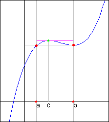
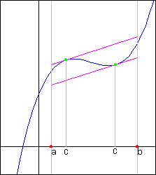

Roll's TheoremSuppose that y = f(x) is continuous at every point of the closed interval[a,b] and differentiable at every point of its interior (a,b).Ifthen there is at least one number c between a and b at which |
 |
The Mean Value TheoremIf y=f(x) is continuous at every point of the closed interval[a,b] and differentiable at every point of its interior(a,b), then there is at least one number c between a and b at which |
 |
How to use this applet
|